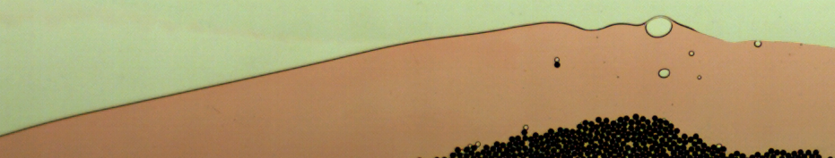
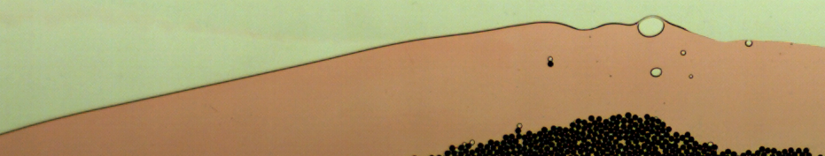

PhD students Leeds
- 18. Yang (George) Lu, EU EID Eagre: high-seas wave-impact modelling, with Maritime Research Institute Netherlands, 11-2020-2023
- 17. Wajiha Rehman, EU EID Eagre: high-seas wave-impact modelling, with Maritime Research Institute Netherlands, 11-2020-2023
- 16. Jonathan Bolton, CDT Fluid Dynamics. Testing and optimising a novel wave-energy device. 2020-2023, with supervisors Duncan Borman and Harvey Thompso.
- 15. Janet Peifer, Oct. 2018-2021, Numerical weather modelling of strongly rotating convection with phase changes. Co-supervisor with supervisor Steve Tobias, funding via Steve's ERC.
- 14. Joseph Elmes, Oct. 2018-2021, Coastal oceanography. NERC DTP, co-supervisor with supervisor Stephen Griffiths.
- 13. Dr Luca Cantarello, (Link pending) Modified shallow water models and idealised satellite data assimilation. Sept. 2017-2021, advisors Onno Bokhove and Steve Tobias, Gordon Inverarity and Stefano (Met Office) Thesis Graduated 2021. Now working at ECMWF
- 12. Will(iam) Booker (EPSRC DTC Fluid Dynamics) on Internal gravity waves, 2015-2018.
- with Dr Mark Walkley (Leeds), Profs. Leo Maas (Royal Netherlands Institute for Sea Research) and Sybren Drijfhout (Southampton). Now working at Met Office
- 11. Dr Erily Moulopoulou PhD Oct. 2014-2018
-
Benchmark Modelling of Breaking 1D Waves and Dynamic Shingle Beaches (Funded NERC DTP, submitted Nov 2018; viva minor corrections passed on 15-01-2019)
- 10. Dr Tomasz Salwa, On variational modelling of wave
slamming by water waves. ESR/PhD European Industry Doctorate Sept. 2014-2018. Viva minor corrections Nov 2018.
-
- together with Prof. Mark Kelmanson (Leeds), Dr. Tim Bunnik & Geert Kapsenberg (MARIN)
- 9. Dr Floriane Gidel, ESR/PhD European Industry Doctorate Sept. 2014-2018. Viva July 2018
- Dissertation
Variational water-wave models and pyramidal freak waves. together with Prof. Mark Kelmanson (Leeds), Dr. Tim Bunnik & Geert Kapsenberg (MARIN)
- 8. Dr Tom Kent, PhD Spring 2013-2016
- An idealised fluid model of NWP: dynamics and data assimilation.
together with Prof. Steve Tobias (Leeds), Prof. Keith Ngan and Dr. Gordon Inverarity (Met Office). Dissertation 03-03-2017
Postdoctoral Investigators/Coordinators Leeds
- 1. Anna Kalogirou, postdoc, FastFEM: fast ships in waves, EPSRC funded, June 30th 2014-2016.
- 2. Tiffany Aslam (50%, PhD required), coordinator, EPSRC Living with Environmental Change network "Maths Foresees". May 2015-May 2018.
- 3. Tom Kent on Wetropolis and EMPIRE, EPSRC Network/Impact Accelerator funded, 2016 till May/June.
MMath/MSc Students Leeds
- 0. Kieran Newman, Modelling the transition of tides to bores. 2015. MSc. Now PhD in Liverpool.
- 1. Chloe Baker, Making a splash with solitons. 2016/2017. MMath.
- 2. Luke Barber, Wetropolis flood demonstrator. 2016/2017. Mmath.
- 3. Lucy Todd, Shocking granular flows. 2017/2018. MMath.
PhD students Twente finished
- 7. Elena Gagarina, Ph.D. 15-09-2010 to 03-10-2014. PI.
- "Compatible Schemes for Coastal Hydrodynamics". Funded by: NWO.
- Oct. 3rd 2014.
- 6. Wenny Kristina, M.Sc.-Ph.D. 08-2007 to 02-10-2014 (1 yr teaching break), NWO. Co-PI
- Modelling of tsunami's. With Prof. Brenny van Groesen. Oct. 2nd 2014
- 5. Shavarsh Nurijanyan, Ph.D. 01-11-2008/09-10-2013, STW. PI.
- "A numerical wave tank for complex wave and current interactions."
- Companies: MARIN/NIOZ/Deltares/Alkyon/TU Delft.
- 4. Henk Sollie, Ph.D. 2003/16-04-2010.
- "Discontinuous Galerkin Finite Element Two-Fluid Modeling." With Jaap van der Vegt.
- 3. Sander Rhebergen, funding: IMPACT Ph.D 2005/05-02-2010. Co-PI. Now in Waterlook, Canada.
- 2. Vijaya Ambati,
International M.Sc. (2002) and Ph.D. 2003/08-02-2008. PI.
- Funding: bonus for my KNAW-fellowship.
- "Space-time discontinous Galerkin method for Water-wave Equations." Postdoc with us. As of 07-2011: Researcher at Twister BV/Qatar Petroleum..
- 1. Pablo Tassi, 2003/13-09-2007, PI
- Visiting Ph.D. student on an EU-Alban scholarship, co-supervision with Prof. Carlos Vionnet (Argentina). "Discontinous Galerkin method for Shallow Water Equations forecasting river flows."
Postdoc in Paris. Now working at The EDF group in Paris.
Postdoctoral Investigators Twente
- Dr. Thomas Weinhart August 2009-2011: DGFEM for Heterogeneous multiscale modelling of polydisperse, nonuniform dry granular flows. Funding by IMPACT. PI.
- Anthony Thornton September 2009-2010. Now a lecturer at Mech. Eng. 3TU-funds.
- Drs. Casper Buitendijk, June-September 2003.
- Ir. Erik Bernsen, December 2003- July 2004. Discontinuous Galerkin finite element approximations of 2D vorticity equations with linear elliptic inversions and circulation. Now works at PDS.
- Dr. Djoko Wirosoetisno, Postdoc funded in part by Twente Institute of Mechanics, Jan. 2002-July 2002. Now at University of Durham.
- Dr. Mousa Al-Tarazi, April 2004- May 2005. Flow of granular matter in thin layers. PI.
Impact Transition project. Postdoc Chemical Engineering with Prof. Hans Kuipers and dr. Martin van SintAnnaland.
- Bert Vreman Dec. 2004- Jan. 2005 Impact postdoc on granular flows. Now at Akzo Nobel Arnhem. PI.
- Dr. Micheline Abbas 2008-2010. Slurry flows in contractions. Impact transition project. Postdoc Chemical Engineering with Prof. Hans Kuipers and Martin van der Hoef. Now staff at FERMAT Institute, University of Toulouse. Co-PI.


 
